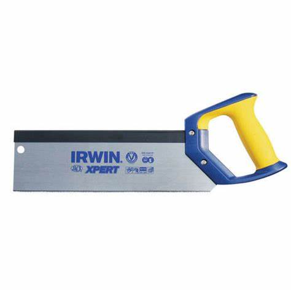

Your work
Student details
Your entries save automatically in this browser. Use Print / Save PDF before leaving the page.
Weeks 9-10
This module
Diagnose fit, justify timber choices and maintain a safe, accurate shared workshop.
Theory 1
Testing drawer fit and diagnosing faults
A hidden drawer must move smoothly, sit in the correct position and align neatly with the Clock. Testing the fit is not simply a matter of pushing the drawer in and deciding whether it works. Careful testing involves observing where resistance occurs, checking the gaps around the drawer and comparing the result with the working drawing and teacher-approved information.
Begin by checking that the drawer and its opening are clean and free from loose dust. Under teacher direction, place the drawer into its opening without forcing it. Observe how it enters, moves and finishes in its closed position. A drawer that becomes tight may be rubbing on one surface, affected by an uneven component or entering the opening out of square. Forcing it can damage edges, hide the real cause and remove the opportunity to make an accurate correction.
A drawer that feels loose also needs investigation. Uneven gaps may show that one component is out of alignment, that material has been removed unevenly or that the drawer is not sitting squarely in the opening. Racking occurs when the drawer has twisted or shifted out of square, causing opposite corners to behave differently. Poor alignment may also be visible when the closed drawer does not sit evenly with nearby surfaces.
Use the following diagnosis process:
- Observe the fault. Identify whether the problem is tightness, looseness, racking, uneven gaps, rubbing or poor alignment.
- Locate the problem area. Look for contact marks, changing gaps or a point where movement becomes difficult.
- Check accuracy. Compare relevant parts with the drawing, approved cutting list and reliable reference faces or edges.
- Identify a likely cause. Consider whether the issue comes from inaccurate measuring, jointing, assembly, sanding or component alignment.
- Plan a small correction. Discuss the evidence with the teacher before removing any material or changing the fit.
- Retest regularly. Make only teacher-approved adjustments, then check the movement and alignment again.
Sanding can change drawer fit, especially when more material is removed from one area than another. This is why the fit should be revisited during surface preparation. Do not sand an entire surface simply because one corner is tight. First locate the actual contact point and confirm the cause. Small, controlled corrections are more accurate and reduce the risk of turning a tight drawer into a loose one.
Record significant faults and corrections in the project folio. A useful record explains what was observed, what caused the problem, what correction was approved and whether the final retest improved the drawer’s function.
Theory 2
Selecting timber for function, appearance and responsible use
Selecting timber is more than choosing the best-looking piece. Each Clock component has a particular job, so the timber assigned to it must be suitable for its function, appearance and position in the finished project. Students must inspect the school-supplied timber and approved off-cuts carefully, then match each piece to the component where its qualities will be most useful.
For structural components, consider whether the timber is sound, straight and stable enough to support accurate joints and assembly. Significant twisting, bowing, cupping, checks or splits may make accurate marking, jointing and fit difficult. Knots and other natural features do not automatically make timber unusable, but their size and position must be considered. A feature located near a joint, edge or narrow section may weaken the component or affect accuracy. Any uncertainty about suitability must be discussed with the teacher before the timber is marked or altered.
Visible components also require attention to grain direction, colour variation and surface appearance. Grain can create an attractive pattern, but the orientation should suit the shape of the component and the appearance of the completed Clock. Related visible parts may look more consistent when their grain and colour are considered together. This does not mean every component must look identical. Natural variation can improve the design when it is selected deliberately rather than left to chance.
Hardwoods and softwoods are broad timber groups, but the names do not guarantee that every hardwood is hard or every softwood is easy to work. Different timbers vary in density, durability, stability, grain and workability. Students should judge the actual material supplied and use approved course information and teacher guidance rather than relying only on its group name.
Use this selection process before assigning material:
- Check the component’s job: decide whether it is mainly structural, visible or part of the hidden drawer.
- Inspect the timber: look for suitable size, straightness, grain direction, defects, surface quality and signs of movement.
- Compare possible pieces: reserve the most suitable material for components where accuracy, strength or appearance matters most.
- Reduce waste: use approved off-cuts where they are sound, stable and large enough, especially for the hidden drawer.
- Record the decision: explain in the folio why the material was suitable and how the choice reduced unnecessary waste.
Responsible selection does not mean using every scrap. A poor-quality off-cut can cause inaccurate work, failure or extra waste later. The better choice is the smallest suitable piece that meets the drawing, cutting information and quality requirements.

Theory 3
Workshop housekeeping and care of Clock tools
Good workshop housekeeping is part of making an accurate and safe timber Clock. A crowded bench, loose off-cuts, dust and tools left in the wrong place can interfere with measuring, marking and checking components. They can also create hazards for you and other students. Keeping the work area orderly is not an extra task completed after the project work. It is a normal part of each practical lesson.
Only the items needed for the current stage should be kept at the bench. Clock components, approved off-cuts, drawings and tools should be arranged so they are protected and easy to identify. Components must not be placed where they may fall, become mixed with another student’s work or be damaged by other activities. Storage arrangements vary between workshops, so follow teacher directions and the relevant school procedures.
Measuring and marking tools affect the accuracy of the Clock carcass, face opening, joints and hidden drawer. They should be handled carefully, kept clean and returned without damage. A damaged reference edge, loose part or unclear marking point may lead to inaccurate work. Do not attempt repairs, adjustments or maintenance unless directed and supervised by the teacher. Report any damage or unusual condition promptly rather than returning the tool without saying anything.
Edge tools require particular care because their cutting edges can be damaged by careless contact or unsafe storage. Carry, place and return them according to the teacher’s instructions and school procedures. Do not leave an edge tool hidden under timber, paper or other materials. Sharpening and other maintenance tasks must only occur under teacher direction using approved procedures.
Before leaving the workshop, complete an end-of-lesson check:
- Stop work when instructed and make the Clock components safe.
- Check that parts, drawings and approved off-cuts are identified and stored as directed.
- Return measuring, marking and edge tools to their correct teacher-approved storage system.
- Report damaged, missing or unsafe equipment immediately.
- Remove waste, dust and loose material using the approved workshop procedure.
- Check the bench, floor and shared area so they are ready for the next student.
Responsible housekeeping also supports collaborative participation. Other students should not have to search for tools, clear your waste or discover damaged equipment. Leaving the workspace ready for the next class shows respect, protects resources and helps everyone begin safely and efficiently.

Guided practice
Weeks 9-10 knowledge checks
Choose an answer, check it and use the progressive hints and feedback to improve.
Apply your learning
Scaffolded written responses
Write first, use the feedback prompts, then compare your reasoning with the model response.
Finish the two-week block
Save your evidence
Your work saves in this browser, but browser storage is not the official submission. Save the completed page as a PDF before changing devices or clearing browser data.
No marks, answers or personal information are sent from this webpage.